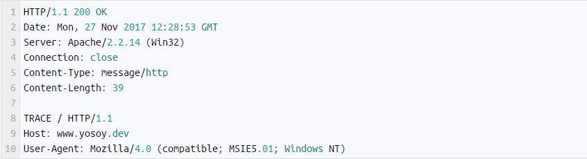

Este método permite monitorear los mensajes que hay entre el cliente y el servidor web. Principalmente se usa
con propósitos de diagnósticos de fallas o para revisar si existen servidores intermediarios en la conexión.
Por ejemplo:
Utilizando este método como se muestra en la parte anterior, obtendríamos una respuesta del servidor como la siguiente:
